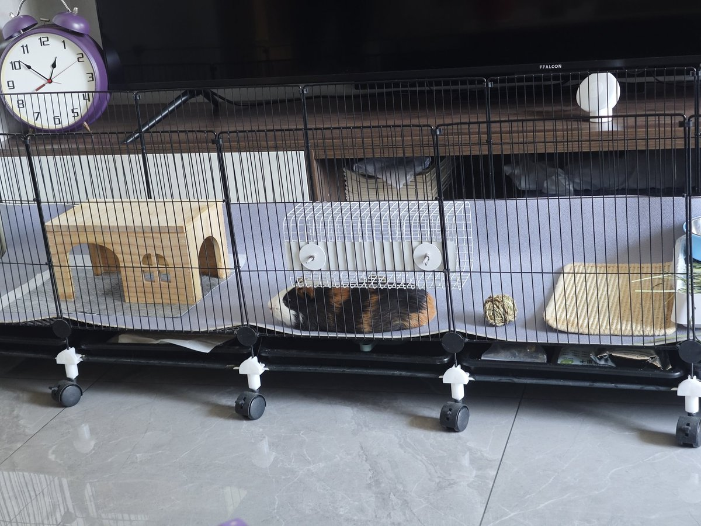

我不敢跟我妈说要把他卖掉，我妈看起来还挺喜欢他的，而且一开始也是我说想试试养宠物的。我从来没养过宠物我也不知道会发展成这样。有时候跟我妈说讨厌他，我妈就在那泼冷水，说养个粘人的你又觉得他烦了。一句好话都没有，我要是说要卖她肯定说我啥也干不好，当初就不该给你买，这类的


我仅剩的道德水准告诉我不能虐待动物不能把它扔了，但我想给他做安乐死，我讨厌它，除了天天给他铲屎，一点互动感都没有，别说抱了摸都不让摸一下，我手一伸过去就到处躲。然后想要吃的就发出像救护车一样的高频werwuwerhu的尖叫声，给他点小零食，抢了就跑，躲到小屋子里吃，还到处乱咬到处乱尿，这种 https://t.co/aMRQmP1xxz